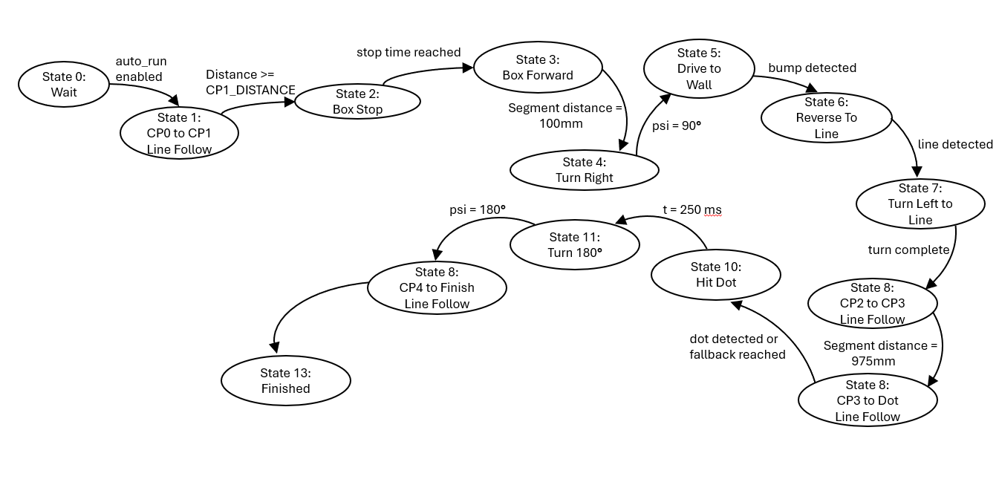

FSMs and Diagrams
Task structure, shared variables, and state-based robot behavior
System Diagrams and Finite State Machines
This page documents the software structure used in our Romi robot during the final project. Our program was organized as a cooperative multitasking system, where separate tasks handled user interaction, motor control, bump sensing, state estimation, and navigation. The task diagram shows how those modules interact, while the FSM diagrams show how each major behavior changes state during a run.
The goal of this structure was to keep the code modular and readable while still allowing the robot to perform sensing, control, and navigation at the same time. Rather than placing all behavior inside one large loop, each subsystem was given a specific role and communicated through shared variables.



System Architecture Overview
Task Diagram
The task diagram represents the full software architecture used on the robot. At startup, the main program initializes the motors, encoders, line sensors, bump sensors, I2C bus, and IMU, then creates the motor, bump, observer, navigator, and user tasks before running them under the cooperative scheduler.
The lower-level tasks interact directly with hardware. The motor tasks update encoder data and apply PWM effort to the motors. The bump task monitors the bumper inputs and publishes a bitmask when contact occurs. The line sensor object provides centroid and line-detection data for line following, while the IMU provides heading and angular-rate information.
Above these hardware-facing modules, the observer task estimates robot motion states such as traveled distance and heading, and the navigator task uses those estimates to decide what the robot should do next. In this way, navigation does not directly drive hardware. Instead, it changes setpoints and mode behavior, which keeps the overall control structure easier to understand and debug.
Individual Task and FSM Descriptions
User Interface FSM
The user task acts as the operator interface over USB serial. It begins in an initialization state where it prints the help menu, then moves into a command state where it listens for single-character inputs. From that command mode, the operator can start or stop the mission, calibrate the line sensor, and update parameters such as base speed, line-following gains, and motor gains.
In addition to normal command handling, the user task includes explicit white and black calibration states for the reflectance sensor array. This is important because the line sensor driver normalizes readings using separately stored white and black calibration values, and accurate line following depends on those references being captured before the run.
Overall, this FSM separates setup behavior from autonomous behavior. It gives the operator a controlled way to prepare the robot, adjust tuning constants, and launch the run without mixing those actions into the rest of the navigation logic.
Left Motor and Encoder FSM
The left motor task is one of two nearly identical low-level drivetrain tasks. It starts in an initialization state where the encoder is zeroed, the motor is disabled, and the effort output is reset. It then waits for the run flag before entering its active control state.
In the run state, the task updates the encoder, computes wheel velocity, compares that measured velocity to the shared setpoint, and applies a proportional effort based on the motor gain. The output is saturated so effort remains within valid bounds, and the task continuously publishes both motor effort and wheel distance for the rest of the system.
This task provides the direct connection between the control logic and the left motor hardware. Because the robot depends on balanced left and right wheel response, the behavior of this task strongly affects heading stability and line-following quality.
Right Motor and Encoder FSM
The right motor task has the same basic structure as the left motor task: initialize, wait, and run. During operation it updates the right encoder, computes the wheel velocity, compares that velocity to the requested setpoint, and applies saturated effort to the right motor driver.
Although the left and right tasks are structurally similar, they are both necessary because a differential-drive robot depends on independent wheel control. Straight motion, line tracking, and heading-based turns all require the two sides of the drivetrain to respond predictably and with good symmetry.
Together, the two motor tasks form the lowest active control layer of the robot. Higher-level logic does not write PWM directly. Instead, it changes the left and right setpoints, and the motor tasks convert those setpoints into actual wheel motion.
Line Sensor FSM
The line sensor module provides the feedback needed for most of the course. It stores white and black calibration values, reads the analog reflectance sensors, normalizes those readings, and computes useful outputs such as line strength, line visibility, dot detection, and line centroid.
The most important quantity for steering is the centroid. This value estimates where the line is relative to the sensor array, allowing the navigator’s line-following controller to add opposite corrections to the left and right wheel setpoints. The driver also provides a line visibility threshold and a dark-count threshold, which are used to detect dots or special course regions.
Even though the line sensor is not scheduled as a separate task in the main file, it behaves like an independent sensing subsystem. It is queried by the user task during calibration and by the navigator during autonomous motion, making it one of the most important inputs in the system.
State Estimation / Observer
The state estimation logic in our final code is implemented as an observer task. Unlike the user or motor tasks, this behavior does not use a large multi-state structure. Instead, it runs continuously in a single loop and updates the estimated motion state each time it is scheduled.
The observer reads the motor effort shares, left and right wheel distance shares, and IMU yaw and yaw-rate measurements. It initializes the state estimate once, then repeatedly calls the estimator model to update the estimated traveled distance and heading. From those states it also integrates an estimated robot position in the plane.
This estimated state is extremely important for navigation because the robot does not rely on tape alone. The navigator uses estimated distance and heading to decide when to stop, when to drive forward a fixed amount, when to turn ninety degrees, and when to begin later segments of the course.
IMU Support Logic
The IMU portion of the system is built around the BNO055 on I2C. During startup, the program configures the I2C pins, scans the bus for the IMU address, and then either loads stored calibration data or waits until the sensor is fully calibrated before saving that data for future runs.
After initialization, the IMU is placed into NDOF mode and used mainly as a heading source. The IMU driver returns yaw in radians and yaw rate in radians per second, which are then used by the observer and higher-level heading logic.
In other words, the IMU is not a separate scheduled task in the final program, but it still behaves as a dedicated sensing subsystem. Its primary value is giving the robot a heading reference that supplements encoder-based estimation during turning and orientation control.
Navigator State Diagram
The navigator is the top-level decision-making task. It reads the estimated distance and heading, checks line-sensor conditions and bump events, and then chooses the correct robot behavior for the current part of the course. Rather than driving motors directly, it sets shared left and right speed commands that the motor tasks track.
This FSM combines three major motion styles. In line-following states, it uses the sensor centroid and PI correction to steer along the tape. In heading-hold states, it drives forward while correcting heading based on the estimated orientation. In turning states, it commands opposite wheel speeds until the robot reaches the desired heading window.
The navigator also contains the special-event logic for the box and wall portion of the course. After reaching the first checkpoint distance, it stops briefly, drives forward a short amount, turns right, drives toward the wall, waits for a bump event, backs up until the line is seen again, and turns left to rejoin the course. Later, it detects the dark dot region, drives through it for a short time, turns around, and line-follows back to the finish.
Navigator State-by-State Breakdown
| State | Name | Main Behavior |
|---|---|---|
| 0 | Wait | Robot stopped until auto-run is enabled. |
| 1 | CP0 to CP1 | Line following from the start until checkpoint-distance threshold is reached. |
| 2 | Box Stop | Short timed stop before entering the box sequence. |
| 3 | Box Forward 100 | Heading-hold forward motion for a fixed short distance. |
| 4 | Turn Right | Turns approximately 90 degrees right using heading control. |
| 5 | Drive to Wall | Drives straight toward the wall while holding heading. |
| 6 | Backup to Line | Backs up until the line is detected again. |
| 7 | Turn Left to Line | Turns back toward the course to resume normal navigation. |
| 8 | CP2 to CP3 | Line follows through the next main course segment. |
| 9 | CP3 to Dot | Continues line following while searching for the dark-dot target. |
| 10 | Hit Dot | Drives forward briefly through the dot region. |
| 11 | Turn Around | Performs an approximately 180-degree turn. |
| 12 | CP4 to Finish | Line follows the final return segment. |
| 13 | Finished | Stops the robot and clears the auto-run flag. |
How the Tasks Work Together
During a run, the user task is mainly used for mission start, stop, and parameter entry. Once the mission begins, the navigator becomes the top-level coordinator. It uses line-sensor information for normal path tracking, observer estimates for distance and heading decisions, and bump-sensor information for wall interaction. The resulting left and right setpoints are then sent to the motor tasks, which directly control the wheels.
This structure made the overall project easier to manage because each software module had a clear purpose. The sensing modules measured the robot and course, the observer converted those measurements into usable motion state information, the navigator selected what behavior should happen next, and the motor tasks executed the requested motion at the wheel level.
Summary
The diagrams show that our final robot was not controlled by a single block of logic, but by a layered software structure. The motor tasks handled low-level actuation, the sensor modules provided environmental feedback, the observer supplied motion estimates, and the navigator organized the robot’s strategy across the obstacle course.
This FSM-based and task-based organization was one of the most important parts of the final design. It made the robot easier to debug, easier to tune, and much easier to explain, especially when different parts of the course required different behaviors such as line following, heading hold, wall interaction, and turnaround logic.